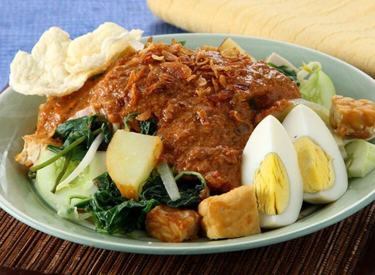

Gado-gado
Salad sayuran khas Indonesia yang terdiri dari aneka sayuran rebus, tahu, tempe, dan telur yang disiram dengan saus kacang yang gurih dan lezat.

Waktu: 45 Menit
Porsi: 3-4 Orang
Tingkat Kesulitan: Mudah
Cara Membuat
- Siapkan Sayuran: Rebus atau kukus semua sayuran secara terpisah hingga matang namun jangan terlalu lembek. Tiriskan dan sisihkan.
- Buat Bumbu Kacang: Haluskan kacang tanah goreng bersama bawang putih, cabai, dan gula merah. Bisa menggunakan ulekan atau blender.
- Masak Bumbu Kacang: Panaskan sedikit minyak, tumis bumbu halus dan daun jeruk hingga harum. Tuang santan atau air, tambahkan air asam jawa dan garam. Masak dengan api kecil sambil terus diaduk hingga saus mengental dan mengeluarkan minyak. Koreksi rasa.
- Siapkan Pelengkap: Goreng tahu dan tempe hingga matang, lalu potong-potong. Rebus telur hingga matang, kupas, dan belah dua.
- Penyajian: Tata potongan lontong, semua sayuran rebus, tahu, dan tempe di atas piring saji.
- Siram Saus: Siram sayuran dan pelengkap dengan saus kacang yang sudah dibuat.
- Sentuhan Akhir: Letakkan potongan telur rebus di atasnya. Taburi dengan bawang goreng secukupnya dan sajikan segera bersama kerupuk atau emping.